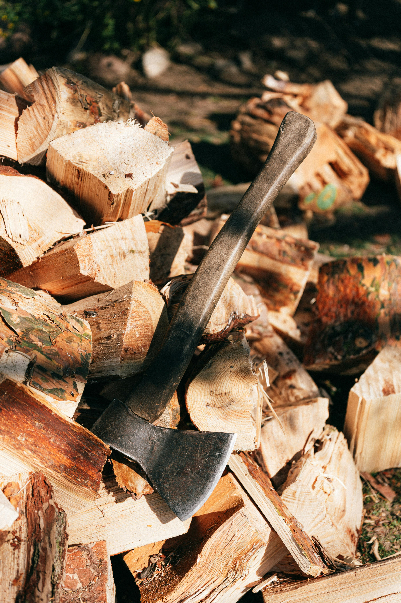

Você decide explorar o local, esperando achar algo de valor. Após passar duas horas vasculhando os arredores, você encontra um machado. Ele pode ser útil mas o tempo perdido lhe deixa apreensivo pela chegada da noite.
Seguir
